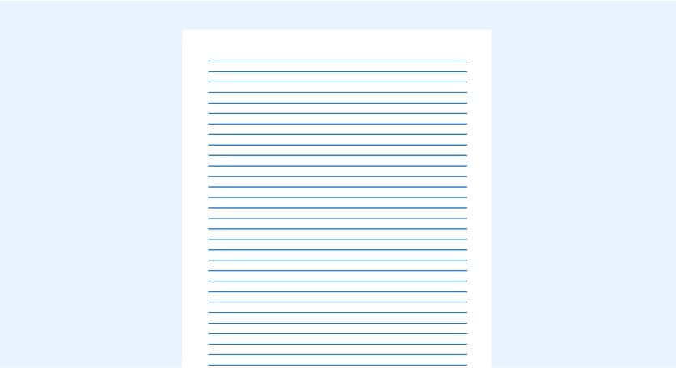
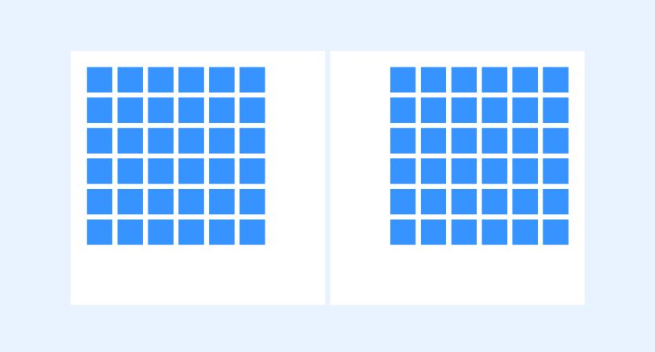
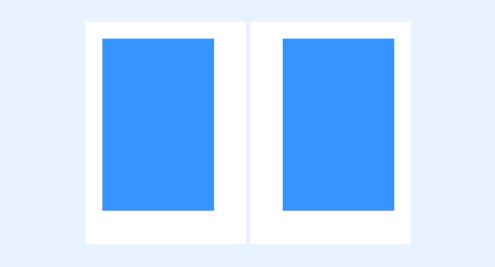
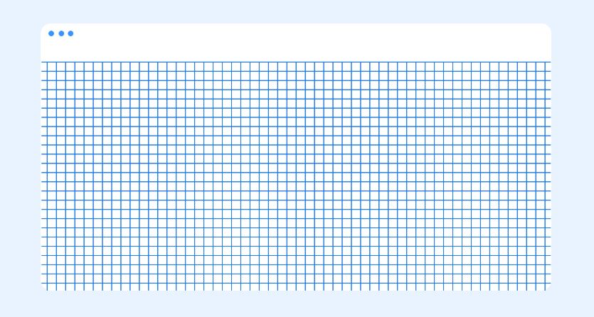
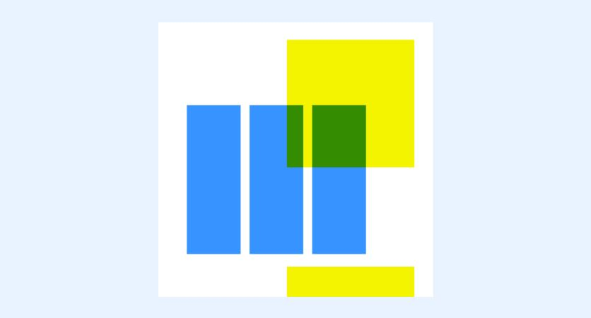
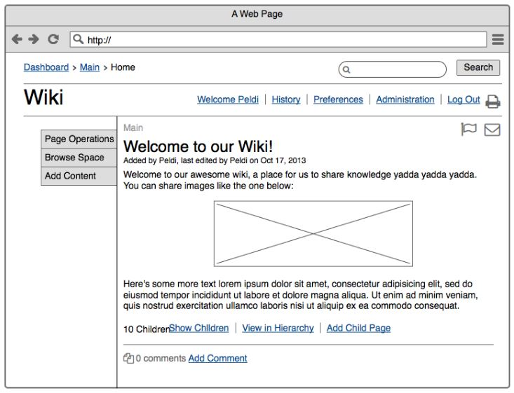
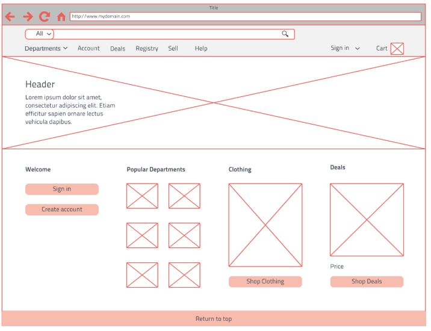

In this lesson you will:
- Learn about wireframes
- Create a wireframe website
In design, a grid is a system for organizing layout. The layouts could be for print (like a book, magazine, or poster), or for screen (like a webpage, app, or other user interface). There are a lot of different types of grid, and they all serve different purposes. Here are some of the main examples:
Baseline grid
Equally spaced horizontal lines that determine where text will sit, it's a grid is a sheet of ruled paper.
Column grid

Newspapers and magazines use column grids extensively.
Modular grid
Kind of an extension of the column grid, a modular grid involves taking a column grid and adding rows to it
Manuscript grid
Classic, “traditional” books use a manuscript grid.
Pixel grid
Digital screens are made up of a microscopic grid of millions of pixels, and sometimes designers get in close to edit images pixel-by-pixel.
Hierarchical grid
This refers to any irregular grid that accommodates specific content needs.
This all leads us to one question, why are grids important?
Grids are a great place to start. Whether you're stuck on design, or simply want a clean idea, grids are a great starting point.
Wireframes
A website wireframe, also known as a page schematic or screen blueprint, is a visual guide that represents the skeletal framework of a website. Wireframes are created for the purpose of arranging elements to best accomplish a particular purpose.
 